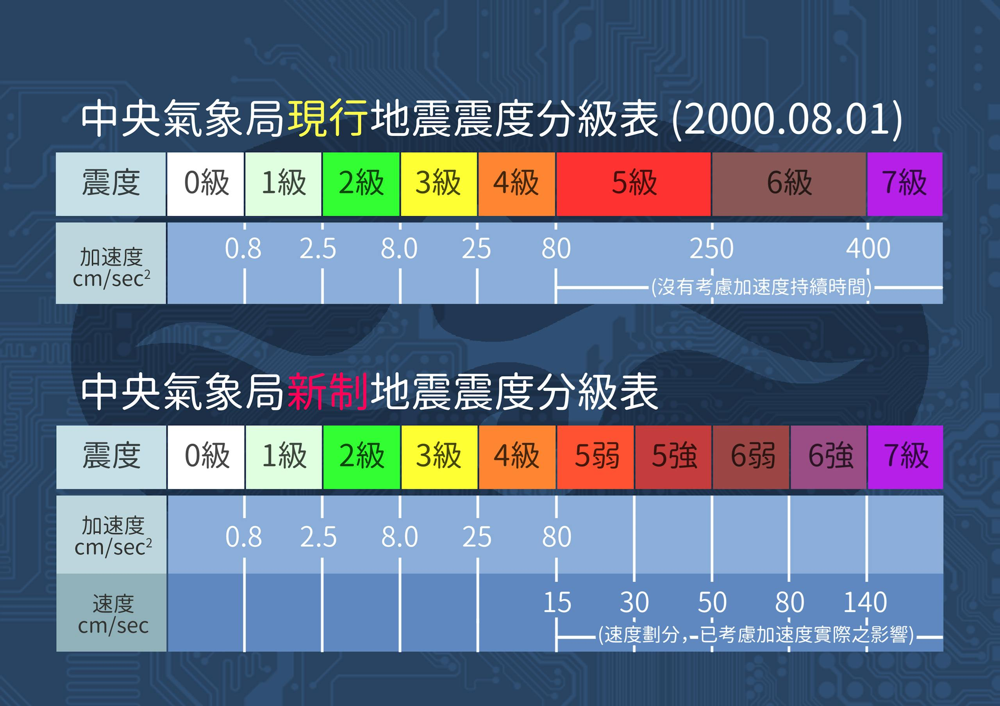

震度 5 強、6 弱，是什麼等級
在109年，中央氣象署將震度分級更新了，將 5 級和 6 級拆分出了強和弱，
台灣的震度分級
台灣現行的震度分級分為 10 級，分別為 0 ~ 4 級、5 弱、5 強、6 弱、6 強、7 級。
在 1950 年以前，震度是由氣象站工作人員體感決定，分為 0 ~ 6 級，共 7 個等級，1950 年起，開始使用儀器決定震度，沿用原本日治時期的 7 級震度，透過地動加速度（PGA，單位為 gal，cm/s/s）劃分，1999 年 921 地震後，震度 6 級的範圍太廣，不利救災判斷，因此在 2000 年 8 月新設震度 7 級，標準定為加速度超過 400 gal。
因地震儀密度增加，用最大加速度決定的震度，時常出現地震規模小但震度高的情況，由於僅瞬間高加速度幾乎不會造成災害，因此在 2020 年再度修改震度分級，震度 4 以下維持用加速度計算，震度 5 以上改用地動速度（PGV，單位為 kine，cm/s），並將震度 5、6 拆分出強、弱，比原來僅用加速度決定震度更好對應災害區域。

新制與舊制震度差異
日本的震度分級
參考資料
https://www.ncdr.nat.gov.tw/CEOCworkshop/cwb_2.pdf